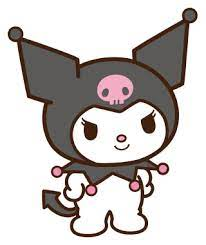
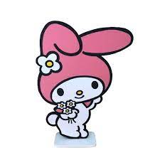
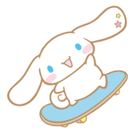
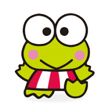
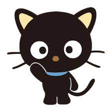
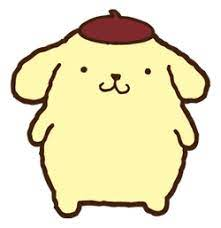
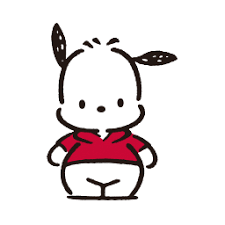

• HELLO KITTY
A Hello Kitty foi criada em 1974. De acordo com a história, ela nasceu no dia 1° de novembro, em Londres, na Inglaterra.
Segundo a Sanrio, a personagem mede aproximadamente a mesma altura de cinco maças, e pesa o equivalente a três maças.
Seu namorado se chama Dear Daniel. Hello Kitty é também conhecida por seu nome completo, Kitty White.
Apesar do bigode, das orelhas e do nome, Sanrio retrata Hello Kitty como uma jovem gijinka, com um laço vermelho, notavelmente sem boca.
• KUROMI
Kuromi é muito radical, além de ser muito bagunceira e causadora de confusões. Ela nasceu no dia 31 de outubro (Halloween).
Ainda pequena, ela achou um portal e entrou nele, assim se teletransportando para o mundo da Hello Kitty.
Kuromi é durona pois teve um passado trágico. Ela é a versão alternativa da My Melody. Kuromi mede cerca de 58cm.
Adora escrever em seu diário e ler romances. Ela é dona de uma loja de enfeites para o Halloween. Seu crush é o Badtz-Maru. Sua cor preferida é a preta.

• MY MELODY
My Melody é uma personagem conhecida por ser uma coelha branca que usa um capuz rosa. Seu aniversário é dia 18 de janeiro.
Ela mora na floresta de Mari Land. Seus principais amigos são o rato Flat e a ovelha My Sweet Piano.
My Melody é honesta e super legal. Um detalhe super meigo, é que a My Melody é apaixonada por flores.
My Melody é prima de Hello Kitty. Ela é super vaidosa. Seu passatempo favorito é fazer cookies e sua comida preferida é bolo de amêndoas.

• CINNAMOROLL
Cinnamoroll é um filhote de cachorro branco, que nasceu acima das nuvens.Atualmente mora na Inglaterra. Ele nasceu dia 24 de Dezembro (véspera de natal).
Sua cauda gordinha e encaracolada se assemelha a um rolo de canela. Foi por isso que ele se tornou mascote do Café Canela.
Quando ele não está cochilando em cima do terraço do café onde mora, está voando pela cidade, procurando diversão.
Cinnamoroll é extremamente fofo e carinhoso. Suas orelhas compridas o permitem de voar. Seus amigos são Chiffon, Mocha, Espresso, Cappucciono e Little Milk.

• KEROPPI
Keroppi é um sapinho com olhos grandes e uma boca em forma de "V". Keroppi nasceu dia 10 de julho de 1987.
Ele adora aventura e sua personalidade borbulhante o torna popular em Donut Pond.
Ele tem um irmão chamado Koroppi e uma irmã chamada Pikki.Na maioria das vezes, ele é visto com seu pequeno amigo caracol Den Den,
Viveu sua infância com seus pais e seus irmãos em uma grande casa às margens da Lagoa Donut, a maior e mais azul lagoa das redondezas.

• CHOCOCAT
Chococat, nascido dia 10 de maio, é um gato preto com enormes olhos redondos, quatro bigodes e sem boca.
Ele nasceu em Chocotown, Colorado. Seu nome foi dado por conta de seu nariz cor de chocolate.
Esse gatinho é corajoso e seu talento especial é sempre saber das últimas notícias, graças os "bigodes" de antenas ultra-sensíveis!
Chococat é animado e adora brincar com seus melhores amigos Cookie-Bau, Nutz, Jelly Bean, e os Duckies (Leafie, Chiffon e Lemonade).

• PURIN
É um cão golden retriever, nascido em 16 de abril de 1996, em um dia ensolarado.
Ele é um cão bonzinho, que mora em sua própria cesta na casa de seu dono.
Sua marca registrada é a boina marrom que fica sempre no alto da cabeça. Purin adora beber leite, e comer pudim.
Ele gasta muito tempo dormindo ou saindo com seus amigos, os quais são: Muffin, Scone e Custard. Seu hobby favorito é colecionar sapatos.

• POCHACCO
O Pochacco é um cachorro branco com orelhas pretas. Nasceu dia 29 de fevereiro (ano bissexto), em Londres, na Inglaterra.
Ele vive no Beco do Rouxinol e adora basquete, futebol e skate.
Ele tem uma personalidade brincalhona e divertida. Gosta de passear e ama sorvete de banana.
Pochacco é muito curioso e desajeitado. Muitas vezes coloca seu nariz onde não é chamado. Sempre anda com camisas esportivas, e gosta de se aventurar.

• BADTZ MARU
Badtz-Maru é um pinguim muito radical. Ele nasceu em Gorgeoustown, no dia 1 de abril (Dia da Mentira).
Ele diz tocar violino e piano, mas só finge, pois não é muito bom nisso.
Ele é conhecido por ser um pinguim encrenqueiro e travesso. Ele tem um jacaré de estimação, chamado Pochi.
Seu hobby favorito é colecionar fotos de bandidos interpretados por estrelas de cinema. Seus melhores amigos são Hana-Maru e Pandaba.
• DEAR DANIEL
Dear Daniel (ou apenas Daniel), é o namorado da Hello Kitty. Ele nasceu dia 8 de maio, em Londres, na Inglaterra.
Ele é alguém doce e ótimo dançarino de balé, que deseja futuramente se tornar um fotógrafo ou uma celebridade. Ele é sensível e ingênuo
Daniel e Hello Kitty se conheceram na infância e se tornaram amigos, mais tarde começaram a namorar. Ele gosta de fazer colares de miçangas.
Daniel viajou o mundo todo por causa do trabalho do seu pai, e acabou em Nova York. De lá voltou para a Inglaterra, onde se reencontrou com a Hello Kitty.